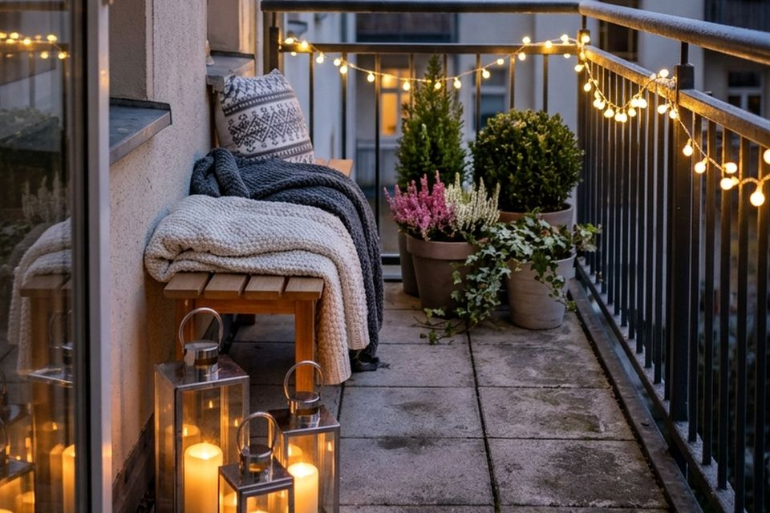

Winterbalkon gemütlich machen: 10 Ideen mit Einkaufsliste & Kosten
Auch ein kleiner Balkon muss im Winter nicht leer und grau sein. Mit warmem Licht, ein paar frostharten Pflanzen und Decken wird er zur gemütlichen Ecke für den Feierabend – meist ohne Bohren und für unter 150 €.
Zur Einkaufsliste & den Kosten ↓
Die 10 Ideen
1. Warmes Licht: Lichterkette und Laternen
Der wichtigste Schritt. Eine warmweiße Lichterkette locker am Geländer und drei Laternen in unterschiedlichen Höhen auf dem Boden machen aus dem dunklen Balkon sofort einen Ort, an dem man sitzen möchte. Für draußen LED-Kerzen mit Timer nehmen – sie halten Wind und Regen aus und gehen abends von selbst an.
ca. 35–60 €
2. Winterharte Pflanzen in einer Ecke gruppieren
Statt leerer Kästen: vier bis fünf Töpfe mit Pflanzen, die Frost aushalten, eng zusammen in eine Ecke stellen. Gut geeignet sind Besenheide (Calluna), Schneeheide (Erica carnea), Efeu, eine Zwergkonifere und eine Kugel aus Japanischer Stechpalme (Ilex crenata) – sie sieht aus wie Buchs, wird aber nicht vom Buchsbaumzünsler befallen. In der Gruppe schützen sich die Pflanzen gegenseitig vor Wind.
ca. 30–60 €
3. Eine schmale Bank an der Hauswand
An der Wand ist es am wenigsten windig, und auf einem schmalen Balkon bleibt der Weg frei. Eine Holzbank (z. B. Akazie, ca. 90–110 cm lang) passt auch auf Balkone mit nur 1 m Tiefe.
ca. 50–90 €
4. Decken und Kissen – und eine Box dafür
Zwei dicke Strickdecken und ein wetterfestes Kissen machen die Bank warm. Damit sie nicht feucht werden: abends in eine wasserdichte Kissenbox oder einfach mit nach drinnen nehmen.
ca. 30–60 € (Box zusätzlich ca. 40–70 €)
5. Outdoor-Teppich gegen kalte Füße
Fliesen und Beton sind im Winter eiskalt. Ein Outdoor-Teppich aus Kunststoffgewebe vor der Bank macht viel aus und trocknet schnell.
ca. 20–40 €
6. Windschutz ohne Bohren
Eine Balkonverkleidung aus Stoff oder Polyrattan wird mit Kabelbindern am Geländer befestigt – ideal für Mietwohnungen. Sie hält Wind ab und schützt nebenbei vor Blicken.
ca. 20–45 €
7. Kleiner Klapptisch für Tee und Glühwein
Ein Klapptisch zum Einhängen ans Geländer braucht keinen Platz auf dem Boden und lässt sich nach dem Abend wieder zusammenklappen.
ca. 25–50 €
8. Natur-Deko zum Nulltarif
Tannenzweige, Zapfen und ein paar Zweige mit Beeren vom Spaziergang in Kästen oder eine Schale legen. Das sieht bis Februar schön aus und kostet nichts. Nur Zweige vom Boden nehmen, nichts von fremden Bäumen abschneiden.
0 €
9. Pflanzen winterfest machen
Auch winterharte Pflanzen im Topf frieren leichter durch als im Beet. Töpfe auf Holzfüße oder eine Styroporplatte stellen und mit Kokosmatte oder Jute umwickeln. An frostfreien Tagen etwas gießen – im Winter vertrocknen Topfpflanzen öfter, als dass sie erfrieren.
ca. 10–20 €
10. Solar- oder Akku-Licht, wenn es keine Steckdose gibt
Viele Balkone haben keinen Außenstrom. Lichterketten mit Akku oder USB-Anschluss halten mehrere Abende; Solarlichter laden im Winter dagegen oft nicht genug. Für die dunkle Jahreszeit sind Akku-Modelle die sicherere Wahl.
ca. 15–30 €
Einkaufsliste
| Was | Menge | ca. Preis |
|---|---|---|
| Lichterkette außen, warmweiß (Akku oder Strom, 10 m) | 1 | 15–30 € |
| Laternen, unterschiedliche Höhen | 3 | 20–40 € |
| LED-Kerzen mit Timer, für außen | 3 | 15–25 € |
| Schmale Holzbank (90–110 cm) | 1 | 50–90 € |
| Strickdecken | 2 | 20–40 € |
| Wetterfestes Kissen | 1 | 10–20 € |
| Besenheide / Schneeheide | 2 | 6–10 € |
| Efeu | 1 | 3–6 € |
| Zwergkonifere | 1 | 10–20 € |
| Ilex-crenata-Kugel | 1 | 15–25 € |
| Frostfeste Pflanztöpfe | 4–5 | 30–60 € |
| Outdoor-Teppich | 1 | 20–40 € |
| Kokosmatte oder Jute + Topffüße | 1 | 10–20 € |
Richtwerte für Deutschland, Stand November 2026. Die Preise schwanken je nach Händler und Saison.
Was kostet ein gemütlicher Winterbalkon?
Einstieg – ca. 100 €: Lichterkette, drei Laternen mit LED-Kerzen, zwei Heide-Töpfe, eine Decke. Du nutzt vorhandene Stühle und Töpfe.
Komplett wie auf dem Bild – ca. 250–350 €: alles aus der Einkaufsliste, inklusive Bank, Teppich und neuen Töpfen.
Tipp: Mit Licht anfangen. Es macht den größten Unterschied pro Euro – alles andere kann nach und nach dazukommen.
Häufige Fragen
Welche Balkonpflanzen halten Frost aus?
Besenheide, Schneeheide, Efeu, Zwergkoniferen, Ilex crenata, Christrose und Purpurglöckchen kommen gut durch den Winter – im Topf aber nur mit etwas Schutz von unten und an den Seiten (siehe Idee 9).
Darf ich im Mietbalkon Lichterketten und Sichtschutz anbringen?
In der Regel ja, solange nichts gebohrt wird und die Fassade nicht verändert wird. Kabelbinder und Klemmen sind meist unproblematisch. Im Zweifel kurz im Mietvertrag oder bei der Hausverwaltung nachsehen.